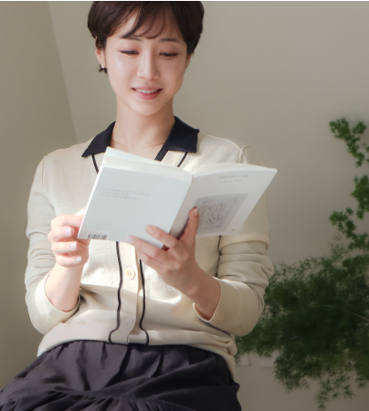
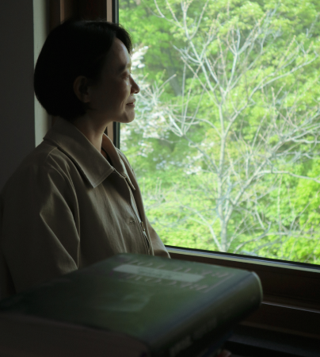
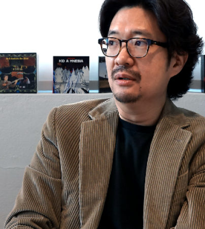

월간 을터뷰
을유문화사가 만난 사람들의 이야기
-

화가
홍지희평소에 눈을 많이 사용해야 하는 직업이어서 시를 한 쪽씩 읽는 작업을 많이 하거든요. 그래서 『에밀리 디킨슨 시 선집』에 애정을 많이 담았던 것 같아요. 에밀리 디킨슨 같은 경우는 평소 노출이 많이 안 된 작가라고 해요. 사진도 한 장밖에 남아 있지 않은 신비로운 인물인데, 주변인이나 지식인들과 편지로 서신을 교류하면서 작품 활동을 하고 영감을 받았던 것들이 굉장히 인상 깊었습니다. 이 작품의 모티브 자체도 오고 가는 편지와 서신을 형상화해서 아날로그적인, 지금은 많이 잊히고 없어진 것들을 다시 돌아보는 소중함에 대해서 이야기하고 싶었습니다.
자세히보기 -

서울대 교수
강초롱원문도 마찬가지로 보부아르는 서술 톤이 감정적이지가 않거든요. 특히 『아주 편안한 죽음』에서는 그나마 감정적이었던 부분들도 제거하면서 훨씬 더 담담하고 객관적으로 사태를 서술하려고 해요. 그러면서도 그 안에서 독자들이 자신들만의 감정을 담아낼 수 있는 행간들을 마련해 놓고 있어요. 그래서 번역할 때 최대한 감정의 과잉을 덜어 내려고 많이 노력했어요. 단어 같은 경우도 가급적 뭔가 평이하지 않으면서도 과잉되지 않은 단어들을 좀 찾으려고 노력했던 것 같고요. 어머니와의 대화 부분에서는 어머니의 어투를 어떻게 살릴 것인가 고민했어요. 이게 19세기 말에 태어난 한 노파가 1960년대에 죽어 가는 내용이잖아요. 그러면 그 노파의 어투를 살리면서도 우리 독자들이 읽어야 하니 한국어의 정서와도 맞아떨어지는 게 필요하다고 생각했어요. 말투를 재현하는 데 신경을 썼던 것 같아요.
자세히보기 -

다큐멘터리 사진가
신웅재아버지께서 사진 찍는 걸 좋아하셨어요. 『타임』, 『뉴스위크』, 『내셔널지오그래픽』 같은 잡지도 구독해서 보셨죠. 덕분에 저도 자연스럽게 다큐멘터리 사진을 접할 수 있었어요. 다큐멘터리 사진 중에서도 포토저널리즘에 빠지게 된 계기가 두 번 있었어요. 첫 번째는 파이돈 출판사에서 나온 『Century』라는 책이에요. 1899년부터 1999년까지 100년간의 중요한 역사적 현장을 담은 사진집인데요. 그 책을 보며 다큐멘터리의 힘을 느꼈어요. 그중에 몇몇 사진들이 계속 머릿속에 맴돌았어요.
자세히보기